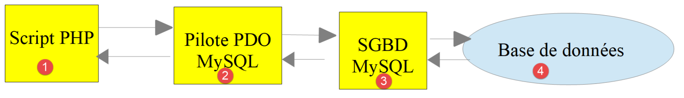
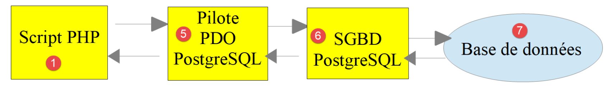

12. Using the MySQL DBMS
We will now write PHP scripts that use a MySQL database:

In the architecture above, the PHP script [1] does not talk directly to the DBMS (Database Management System) [3]. It talks to an intermediary called a DBMS driver [2]. PHP provides a standard interface for these drivers, the [PDO] interface (PHP Data Objects). This interface is implemented by various drivers, each suited to a particular DBMS: one driver for the MySQL DBMS, another for the PostgreSQL DBMS… To change DBMS, you change driver:

The PDO driver isolates the PHP script [1] from the DBMS [3, 6]. Since these drivers implement a standard interface, one might expect the PHP script [1] not to change when switching from the MySQL DBMS [3] to the PostgreSQL DBMS [6]. In reality, this ideal does not exist. To talk to the DBMS, the PHP script sends SQL (Structured Query Language) statements. SQL is a language implemented by all DBMSs, but it is incomplete, so each DBMS has added its own proprietary statements. This is a first cause of incompatibility between DBMSs. Moreover, the data types available in databases can differ from one DBMS to another: PostgreSQL, for example, accepts far more data types than MySQL. This is a second cause of incompatibility. Yet another is the handling of automatic primary keys (generated by the DBMS): almost every DBMS has its own policy. And so on… The causes of incompatibility are many.
If we want to avoid rewriting the PHP script [1] when moving from MySQL [3] to PostgreSQL [6], we generally have to insert a new layer between the PHP script [1] and the PDO driver [2, 5], a layer whose role is to smooth out the incompatibilities between the two DBMSs. However, in the simple cases we are going to meet, this extra layer will not be needed.
We will now use the MySQL DBMS. Its version 8.4 is included in the [Laragon] package we installed at the beginning of this course.
Readers new to databases and the SQL language can read the document [http://sergetahe.com/cours-tutoriels-de-programmation/cours-tutoriel-sql-avec-le-sgbd-firebird/]. That document uses the Firebird DBMS rather than MySQL, but it covers the fundamentals of databases and of the SQL language. The MySQL 8.4 documentation is available at [https://dev.mysql.com/doc/refman/8.4/en/].
The scripts of this chapter are in the [scripts-console/mysql] folder:
12.1. Creating a database
We now show how to create a database and a MySQL user with the [Laragon] tool.
Once started, [Laragon] is managed from its main window and its menu (right-click in the window or on its icon in the taskbar):
- the [Start All] button starts the Apache web server and the MySQL DBMS. The [Laragon] window then shows each of them as running, together with its listening port: 80 for Apache, 3306 for MySQL;
- the [Database] button launches the [HeidiSQL] tool, shipped with [Laragon], which lets you administer MySQL databases graphically. You can also install the web tool [phpMyAdmin] (menu Tools / Quick add), which is then available at the URL [http://localhost/phpmyadmin];
- the [Terminal] button opens a command window in which the [Laragon] tools (php, composer, mysql…) can be used directly.
The PHP 7 course created the database and its user with the mouse in [phpMyAdmin]. Here we prefer to write the corresponding SQL statements in a text file, called an SQL script. Such a script can be reread, corrected, kept alongside the application's code, and rerun at will to recreate the database identically. The [dbpersonnes.sql] script is as follows:
Comments
- line 1: in SQL, a line beginning with two dashes is a comment;
- line 6: creates the [dbpersonnes] database if it does not already exist. We will build a table of people in it. The [utf8mb4] character set can store every Unicode character (accented letters, but also Asian characters, emojis…). It is MySQL 8's default character set. The name [utf8], used in the PHP 7 course, refers in MySQL to an old, incomplete character set (at most three bytes per character), now deprecated;
- line 9: creates the user [admpersonnes] with the password [nobody]. A MySQL user is identified by their name and by the machine they connect from, here [localhost], the local machine. The password [nobody] is very weak (easy to guess). In production, a strong password should be chosen;
- line 12: the user [admpersonnes] is granted all privileges on all the tables ([dbpersonnes.*]) of the [dbpersonnes] database, and no privileges on other databases.
This script must be run by the DBMS administrator. In the [Laragon] installation, this is the [root] user, with no password. We open the [Laragon] terminal in the [scripts-console/mysql] folder and run the script with the [mysql] command-line client:
- the [-u root] option gives the name of the user connecting to the DBMS. Since [root] has no password, there is no need to supply one (option [-p]);
- the [<] symbol redirects the contents of the [dbpersonnes.sql] file to the input of the [mysql] client, which executes the SQL statements it reads one after another. When everything goes well, nothing is displayed.
We could just as well have opened the [dbpersonnes.sql] file in [HeidiSQL] (menu File / Load SQL file) or in the [SQL] tab of [phpMyAdmin] and run it from there. We check the privileges of the user [admpersonnes] by connecting as that user. The [-e] option passes an SQL statement directly to the [mysql] client; the [show grants] statement displays the privileges of the connected user:
- line 2: the [mysql] client warns that a password typed on the command line ([-pnobody], with no space after [-p]) can be seen by other users of the machine. With the [-p] option alone, the password is requested from the keyboard, without being echoed;
- line 7: the user [admpersonnes] has all privileges on the [dbpersonnes] database.
We now have:
- a MySQL database [dbpersonnes];
- a user [admpersonnes/nobody] who has all privileges on this database.
We are going to write PHP scripts to work with the database. PHP has various libraries for managing databases. We will use the [PDO] library (PHP Data Objects), which sits between the PHP code and the DBMS:

The [PDO] library lets the PHP script abstract away the exact nature of the DBMS being used. Thus, above, the MySQL DBMS can be replaced by the PostgreSQL DBMS with minimal impact on the PHP script's code. Each PDO driver is a PHP extension that must be enabled. The following [pdo-drivers.php] script displays the available drivers:
- line 7: the static method [getAvailableDrivers] of the [PDO] class returns the list of available PDO drivers;
- line 10: the [extension_loaded] function tells whether a PHP extension is loaded. The PDO drivers for MySQL, PostgreSQL and SQLite are the extensions [pdo_mysql], [pdo_pgsql] and [pdo_sqlite].
The results:
In this installation, all three drivers are enabled. Only the [mysql] driver is needed in this chapter. If a driver is missing, you enable it from the [Laragon] menu: PHP / Extensions, then click the desired extension, for example [pdo_mysql]. Another way to enable an extension is to edit directly the [php.ini] file that configures PHP ([Laragon] menu PHP / php.ini). An extension is enabled there by a line of the form:
It is disabled when the line is commented out with a semicolon ([;extension=pdo_pgsql]). After editing the [php.ini] file, the [Laragon] services must be restarted ([Reload] button) for Apache to take the changes into account. Console scripts, on the other hand, reread the [php.ini] file on every run.
12.2. Connecting to a MySQL database
Connecting to a DBMS is done by constructing a [PDO] object. You can use the constructor of the [PDO] class or, since PHP 8.4, its static method [connect]. Both accept the same parameters:
The parameters mean the following:
Parameter | Meaning |
[$dsn] | (Data Source Name) a string specifying the type of DBMS and its location on the network. The string ["mysql:host=localhost"] indicates a MySQL DBMS running on the local machine. This string can include other parameters, separated by semicolons, notably the DBMS listening port, the name of the database to connect to and the character set used for the exchanges: ["mysql:host=localhost;port=3306;dbname=dbpersonnes;charset=utf8mb4"] |
[$username] | the identifier of the user connecting |
[$password] | their password |
[$options] | an array of options for the DBMS driver |
Only the first parameter is mandatory. The object thus constructed will then support all the operations performed on the database we have connected to. If the object could not be constructed, an exception of type [PDOException] is thrown.
Here is a connection example [mysql-01.php]:
Comments
- lines 8-10: the connection parameters;
- line 14: the connection to the DBMS. The [connect] method is used here with the following parameters:
- a string specifying the type of DBMS and its location. The string ["mysql:host=localhost"] indicates a MySQL DBMS running on the local machine. The port has not been specified, so port 3306 is used by default. The database name is not given either. The connection is then made to the MySQL DBMS, and a specific database can be selected later;
- a user identifier;
- its password;
- line 17: [$connexion::class] is the name of the class of the [$connexion] object. Since PHP 8.4, each PDO driver has its own class, derived from the [PDO] class: [Pdo\Mysql] for MySQL, [Pdo\Pgsql] for PostgreSQL, [Pdo\Sqlite] for SQLite. The [PDO::connect] method creates an object of the class matching the DSN. With [new PDO(...)], we would get an object of the [PDO] class itself, which works the same way but does not give access to the driver-specific methods. Since we will only use the methods common to all drivers, either form is fine;
- line 19: the connection is closed by removing the last reference to the PDO object created initially. This is in fact what happens automatically at the end of the script;
- line 20: connecting to a DBMS can fail. In that case, an exception of type [PDOException] is thrown. It derives from the PHP exception [RuntimeException];
- line 21: we display the exception's error message;
- line 22: we end the script with a non-zero exit code, which signals the failure to any calling program.
The results:
Let's run the script again with a wrong password in the [PWD] constant. The result is then the following:
The message contains three pieces of information: the SQLSTATE code [HY000], a standardized error code common to all DBMSs (HY000 = general error), the MySQL-specific error code [1045] and the MySQL message.
12.3. Creating a table
The [mysql-02.php] script shows how to create a table in a database:
Comments
- line 7: this time the DSN designates the [dbpersonnes] database ([dbname=dbpersonnes]). The [charset=utf8mb4] parameter tells the DBMS that the character strings exchanged with it are UTF-8 encoded, the encoding of our PHP scripts. This way, accented characters will be correctly stored in the database and correctly read back;
- line 14: connection to the database. This is always the first thing to do. The result of the connection is a [PDO] object through which the operations on the database will be performed;
- line 16: the SQL statement [drop table] deletes the [personnes] table from the [dbpersonnes] database. The [if exists] clause avoids an error if the [personnes] table does not exist;
- line 17: execution of the previous SQL statement on the [dbpersonnes] database with the [PDO::exec] method. This execution may throw a [PDOException], which will be caught by the [catch] clause;
- lines 19-20: this SQL statement creates a [personnes] table. A table contains rows and columns. The columns form what is called the table's structure. The rows form the table's content. A database can contain one or more tables. Here the [personnes] table will have three columns:
- prenom: a person's first name, as a string of at most 30 characters;
- nom: that same person's last name, as a string of at most 30 characters;
- age: the person's age, as an integer;
- the [not null] attribute on a column requires the column to have a value. Failing to give it one causes a [PDOException];
- [primary key(nom, prenom)] sets a primary key on the [personnes] table. A primary key has a unique value for each row of the table. Here the primary key will be obtained by concatenating the row's [nom] and [prenom] columns. Because of this constraint, the table cannot contain two people with the same last name and first name, that is, two namesakes. Creating a namesake of a person in the table causes a [PDOException];
- lines 23-25: if a [PDOException] occurs, we display the associated error message;
- lines 26-28: the [finally] clause is executed in every case, exception or not, to close the database connection.
When an error occurs, an SQL operation performed with a [PDO] object can either return a special value (often the boolean [false]) without reporting anything, or throw an exception. This behavior is controlled by the connection's [PDO::ATTR_ERRMODE] attribute. In PHP 7, the default mode was the first one: errors were silent, and the PHP 7 course requested the second mode with the statement:
Since PHP 8.0, exception mode is the default: any DBMS error throws a [PDOException]. This statement is therefore no longer needed and we will not write it anymore. This is also why we wrote [drop table if exists]: in the PHP 7 course, the statement [drop table personnes] on a non-existent table failed silently; in PHP 8, it would throw an exception.
The results:
If the script runs without error, you can check that the table exists, and see its structure, with [HeidiSQL], [phpMyAdmin] or, more simply, with the [mysql] client. The SQL statement [describe] displays a table's structure:
- lines 6-8: the table's three columns, with their type (Type column);
- Null column: none of the three columns can be empty;
- Key column: the [prenom] and [nom] columns are part of the primary key (PRI).
The SQL statement [show index] displays the table's indexes. An index makes it possible to find the rows of the table having a given index value faster than by scanning the table's rows sequentially. The primary key is always one of the indexes, but an index need not be a primary key:
- here the index is the primary key (column Key_name = PRIMARY);
- it is made up of the [nom, prenom] columns of each row, in that order (columns Seq_in_index and Column_name).
Now let's see what happens if we introduce errors in, respectively, the database name, the user name and the password.
If we use a non-existent database name ([dbname=dbpersonnes2]):
If we use a non-existent user name:
If we use a wrong password:
Note that MySQL does not say whether it is the user name or the password that is wrong: this is a security measure that gives no clue to someone trying to guess the credentials. Likewise, the user [admpersonnes] does not learn whether the [dbpersonnes2] database exists or not: they only know they have no access to it.
12.4. Populating a table
We are going to write a PHP script that executes SQL statements found in the following text file [creation.txt]:
Comments
- the SQL language (Structured Query Language) is not case-sensitive (uppercase, lowercase) as far as SQL statements are concerned;
- line 1: the [personnes] table is deleted if it exists;
- line 2: creation of the [personnes] table with the three columns (prenom, nom, age) and the primary key (nom, prenom);
- lines 3-9: insertion of 7 rows into the [personnes] table;
- line 5: this insert statement should fail because it attempts the same insertion as the previous line. The primary key constraint should prevent this insertion: there cannot be two people with the same last name and first name;
- line 9: this insert statement should also fail, for the same reason;
- line 7: the first name [Géraldine] contains an accented character. The [creation.txt] file, like all the course files, is UTF-8 encoded: this is the default encoding of [VS Code], shown in its status bar. The PHP 7 course added to the file the MySQL-specific statement [SET NAMES 'utf8'] to tell the DBMS the encoding of the characters it receives. This is no longer necessary: the encoding is set once and for all by the [charset=utf8mb4] parameter of the DSN.
The PHP script responsible for executing the SQL statements of this text file is the following [mysql-03.php]:
Comments
- the [exécuterCommandes] function (lines 35-80) executes the SQL commands it finds in the text file [$sqlFileName] (parameter 2). To execute them, it uses the open connection [$connexion] (parameter 1) to the MySQL server. The third parameter [$suivi] is a boolean that controls screen output: when [true], each executed SQL statement is displayed on screen along with its success or failure; otherwise the SQL statement runs silently. The fourth parameter [$arrêt] controls what to do when an SQL command fails: when [true], it indicates that execution of the SQL commands must stop; otherwise it continues. The [exécuterCommandes] function returns an array of error messages, empty if there were no errors. Note that PHP accepts accented characters in function and variable names;
- line 12: the path of the [creation.txt] file is built from the [__DIR__] constant, the script's folder. This way the script finds its file whatever folder it is launched from;
- lines 15-20: we open the connection to the MySQL database [dbpersonnes]. If opening fails, an error message is displayed and we stop;
- line 23: the [exécuterCommandes] function is called to execute the file of SQL statements. It is passed an open connection. The last two arguments are passed by name ([suivi: true, arrêt: false]): these are named arguments (PHP 8.0). The call [exécuterCommandes($connexion, SQL_COMMANDS_FILENAME, true, false)] would be equivalent but less readable: without looking up the function's signature, you cannot tell what [true] and [false] mean;
- line 25: we close the connection;
- lines 27-30: we display the errors returned by the [exécuterCommandes] function;
- lines 45-47: the SQL statements are put into an array [$requêtes] with the [file] function. The [FILE_IGNORE_NEW_LINES] option removes the end-of-line marker from each line read; the [FILE_SKIP_EMPTY_LINES] option skips empty lines. The two options are combined with the [|] operator (bitwise or). If the file is not readable, we do not call [file], which would emit a warning, and [$requêtes] is [false];
- lines 49-51: if the file of SQL statements could not be read, we return an error array with a single message;
- line 53: errors will be accumulated in the [$erreurs] array;
- line 54: we loop over all the queries;
- line 56: the [trim] function removes the whitespace before and after the text of the SQL statement. "Whitespace" here means the space, the tab \t, the carriage return \r, the end-of-line marker \n… A line containing only whitespace thus becomes empty: it is skipped (line 60);
- line 64: the SQL statement is sent to the MySQL server. The [PDO::exec] method throws an exception if execution fails. If execution succeeds, the SQL statement is displayed on screen if the [$suivi] parameter is [true];
- line 71: in case of error, the error message is added to the error array;
- lines 73-75: if the [$arrêt] parameter is [true], we exit the loop with the [break] statement;
- line 79: once all the SQL statements have been executed, we return the error array [$erreurs].
The [addError] function (lines 82-91) adds an error to the error array [$erreurs]. It takes 4 parameters:
- the [$erreurs] parameter is passed by reference ([&$erreurs]). Indeed, we want to act on the array passed as a parameter and not on a copy of it;
- the [$requête] parameter is the SQL text of the statement that failed;
- the [$msg] parameter is the error message associated with the statement that failed;
- the boolean [$suivi] indicates whether the error message should be displayed ([true]) or not ([false]) on the console.
Note that the [exécuterCommandes] and [addError] functions are defined after the code that uses them. This is possible because PHP takes note of all the functions defined at the top level of a script before starting to execute it.
The screen output:
- lines 6 and 10: the two namesake insertions failed: the primary key 'Lefur-Sylvie' (resp. 'Girond-Paulette') already exists (Duplicate entry). The SQLSTATE code [23000] denotes an integrity constraint violation; the code [1062] is the MySQL error code;
- lines 12-16: the summary of the errors.
The insertions performed can be seen with the [mysql] client:
Note that the rows are returned in primary key order (nom, prenom), which is not the order of insertion. In SQL, the order of the rows returned by a [select] is guaranteed only if you ask for it with an [order by] clause.
12.5. Executing arbitrary SQL statements
The following script shows the execution of the SQL statements of the following text file [sql.txt]:
Among these SQL statements there is the [select] statement, which brings back results from the database, the [insert], [update] and [delete] statements, which modify the database without bringing back results, and finally erroneous statements such as the last one ([xselect]). The [mysql-04.php] script reuses the [mysql-03.php] script, changing the name of the SQL statement file ([__DIR__ . "/sql.txt"]). Only the [exécuterCommandes] function is modified, and an [afficherInfos] function is added:
Comments
- lines 35-87: the [exécuterCommandes] function is slightly modified: the SQL [select] statement is not executed in the same way as the other SQL statements. It is the only statement that returns a table as its result, that is, a set of rows and columns from the database;
- line 63: we isolate the first word of the SQL statement. The [explode] function splits the query on spaces into at most 2 pieces (3rd parameter); the first piece ([[0]]) is the command name, converted to lowercase by the [strtolower] function. The PHP 7 course used a regular expression;
- lines 67-69: if the SQL command is [select], the [PDO::query] method is used to execute the SQL statement; otherwise the [PDO::exec] method. In both cases, if execution fails, an exception is thrown and caught by the [catch] clause. If execution succeeds, its result is displayed by the [afficherInfos] function (line 75):
- the [query] method returns an object of type [PDOStatement] that gives access to the rows returned by the [select]. Its second parameter [PDO::FETCH_NUM] indicates that each row must be returned as an array indexed by the column numbers 0, 1, 2…;
- the [exec] method returns an integer: the number of rows modified by the SQL statement;
- lines 101-124: the [afficherInfos] function displays information about the result of executing an SQL statement. The [$résultat] parameter has the type [PDOStatement|int]: this is a union type (PHP 8.0), which accepts either a [PDOStatement] object or an integer;
- line 104: we handle the [select] case. The [instanceof] operator tests the type of the [$résultat] object;
- line 107: the [PDOStatement::columnCount] method returns the number of columns of the [select]'s result table;
- line 108: the [PDOStatement::getColumnMeta] method returns an array of information about column no. [$i] of the [select]'s result table. In this array, the value associated with the 'name' key is the column's name. The column names are accumulated in the [$colonnes] array;
- line 110: the [implode] function concatenates the column names, separating them with a comma;
- line 113: with the [str_repeat] function we build a separator line of the same length as the title. The [mb_strlen] function counts the characters of a UTF-8 string; the [strlen] function counts bytes, and an accented character takes up two;
- lines 115-117: an object of type [PDOStatement] can be traversed with a [foreach] loop. On each iteration, the element obtained is a row of the [select]'s result table, in the form of an array of the values of the row's columns. We display these values separated by commas;
- lines 121-123: the result of executing an [insert], [update] or [delete] statement is the number of rows modified by the statement. The PHP 7 course used a [switch] statement here, one of whose clauses was mistakenly written [case "delete";] with a semicolon instead of a colon. PHP tolerated it; since PHP 8.5, this syntax is deprecated.
The screen output:
- lines 33-35: the last [select] returns no rows: the person [Bruneau] was deleted by the preceding [delete] statement;
- line 36: the [xselect] statement does not exist. The SQLSTATE code [42000] denotes a syntax error or access violation, the MySQL code [1064] a syntax error.
12.6. Using prepared SQL statements
12.6.1. Example 1
Let's examine the following script [mysql-05.php]:
Comments
We are interested here in the lines that insert people into the people table of the [dbpersonnes] database.
- line 16: the SQL [delete] statement without a [where] clause deletes all the rows of the table;
- line 23: we "prepare" a parameterized SQL statement. The parameters are preceded by a colon: [:nom], [:prenom], [:age]. To "prepare" an SQL statement, we use the [PDO::prepare] method. The result is an object of type [PDOStatement]. "Preparing" is not executing: nothing is modified in the database;
- line 26: execution of the prepared statement with the [PDOStatement::execute] method. To do this, values must be given to the parameters [:nom], [:prenom] and [:age]. There are several ways to do this. Here we use an associative array whose keys are the names of the prepared statement's parameters, which we pass to the [PDOStatement::execute] method;
- line 27: the [PDOStatement::rowCount] method returns the number of rows modified by the last execution of the prepared statement. In the double-quoted string, the method call is surrounded by braces [{...}] so that PHP evaluates it. The same goes for the array element [{$personne["prenom"]}];
- lines 30-33: another way is to give the parameters a value with the [PDOStatement::bindValue] method before calling [execute] with no argument. The optional 3rd parameter of [bindValue] specifies the SQL type of the value ([PDO::PARAM_INT] for an integer, [PDO::PARAM_STR], the default, for a string). The drawback is that one statement is needed per parameter. The associative array approach is often more convenient.
The method used here to perform the insertions:
- one prepared statement;
- n executions of the prepared statement;
is cheaper in execution time than executing n different SQL statements. Above all, it has another, decisive advantage: the parameter values are sent to the DBMS separately from the text of the SQL statement. They therefore cannot change its meaning. If we built the SQL statement by concatenation, for example ["insert into personnes values ('$prenom', '$nom', $age)"], a first name containing an apostrophe ("Jean-Michel d'Ormesson") would cause a syntax error, and a malicious user could slip SQL statements of their choice into an input value: this is the so-called SQL injection attack. Prepared statements should therefore be preferred whenever an SQL statement contains values coming from outside the script. They can be used for the SQL statements [select], [update], [delete] and [insert]. In the case of the SQL [select] statement, after executing it with [PDOStatement::execute], the result rows are retrieved with the [PDOStatement::fetch] or [PDOStatement::fetchAll] methods.
The results:
12.6.2. Example 2
The following script [mysql-06.php] shows the use of a prepared statement for the SQL [select] operation, as well as various ways of retrieving the rows returned by this operation:
Comments
- lines 13-23: a [Person] class whose typed private attributes bear the names of the columns of the [personnes] table;
- lines 26-34: an immutable [Personne] class whose constructor has parameters bearing the names of the columns of the [personnes] table;
- line 38: the 4th parameter of [PDO::connect] is an array of connection options. The [PDO::ATTR_DEFAULT_FETCH_MODE] option sets how the rows read will be returned by default: here [PDO::FETCH_ASSOC], associative arrays indexed by column names. Without this option, the default mode is [PDO::FETCH_BOTH] (see below);
- lines 43-45: we insert 10 rows into the [personnes] table with a prepared statement. The array of values is built directly in the call to [execute];
- lines 47-48: we "prepare" an SQL [select] statement, which we then execute;
- line 50: with the [PDOStatement::fetch] method we retrieve the next row of the result of the executed SQL [select] operation, here the first one. The [fetch] method can return rows in various ways. The script presents a few of them. Without a parameter, it uses the connection's default mode, here an associative array. Note that the age is returned as an integer ([int(0)]). This is new in PHP 8.1: previously, the MySQL driver returned all values as character strings ([string(1) "0"] in the PHP 7 course). The result displayed by [var_dump] is the following:
- line 53: the [PDO::FETCH_BOTH] parameter causes the returned row to be an array indexed both by column names and by column numbers:
- line 56: the [PDO::FETCH_OBJ] parameter causes the returned row to be an object of type [stdClass] whose attributes are the names of the table's columns:
- line 59: we set the read mode of the [fetch] method with the [PDOStatement::setFetchMode] method. This mode then becomes the default mode of the [$statement] statement until it is changed, either by another [setFetchMode] operation or by passing a mode as a parameter to the [fetch] method, as was done previously. The operation [setFetchMode(PDO::FETCH_CLASS, Person::class)] indicates that the row read must be placed in an object of type [Person]. [Person::class] is the string "Person", the fully qualified name of the class. PDO creates the object and then gives its attributes the values of the columns with the same names, even if these attributes are private. The next line displays the result:
- lines 63-65: shows how to process the remaining rows of the [select] sequentially. The [fetch] method returns [false] when there are no more rows, which stops the loop. The display of [$personne] uses the [__toString] method of the [Person] class:
- lines 67-68: a parameterized [select]: we only want people aged at least 70;
- line 69: the [PDOStatement::fetchAll] method returns all the result rows at once, here as associative arrays (the connection's default mode). The [array_map] function turns each of them into a [Personne] object. The notation [new Personne(...$ligne)] uses the spread operator [...] on an associative array: each key becomes a named argument (PHP 8.1). Thus the row [["nom" => "nom7", "prenom" => "prenom7", "age" => 70]] gives the call [new Personne(nom: "nom7", prenom: "prenom7", age: 70)]. This technique suits an immutable class whose attributes are initialized by the constructor, whereas the [PDO::FETCH_CLASS] mode, which assigns values to the attributes directly, fails with a class such as [Personne] whose constructor requires arguments. It also has the advantage of having PHP check the type of each value. The result displayed is the following:
The following table summarizes the read modes we have met:
Mode | A row is returned as |
[PDO::FETCH_ASSOC] | an associative array [column => value] |
[PDO::FETCH_NUM] | an array indexed by the column numbers 0, 1, 2… |
[PDO::FETCH_BOTH] | an array indexed both by column names and by column numbers (PDO's default mode) |
[PDO::FETCH_OBJ] | an object [stdClass] whose attributes are the column names |
[PDO::FETCH_CLASS] | an object of the given class whose attributes bear the column names |
Each driver also has its own options, grouped in its class since PHP 8.4. For example, the option that executes an SQL statement on every connection to MySQL is written [Pdo\Mysql::ATTR_INIT_COMMAND]. The old [PDO::MYSQL_ATTR_INIT_COMMAND] constants, found in many documents, have been deprecated since PHP 8.5.
12.7. Using transactions
A transaction groups a sequence of SQL statements into a unit of execution: either all the statements succeed, or one of them fails and then all the SQL statements that preceded it are cancelled. In other words, when a transaction is used to execute SQL statements, once it has run the database is in a stable state:
- either in a new state created by the successful execution of all the SQL statements of the transaction;
- or in the state it was in before the transaction started executing.
We will go back to the example, studied in the section "Executing arbitrary SQL statements", of executing the SQL statements contained in a text file. We will include this execution in a transaction. The SQL statements will be contained in the following file [sql2.txt]:
The erroneous statement on line 11 will make the whole transaction fail. We should therefore find the database as it was before the transaction. In the example above, we should therefore not see in the table the row inserted by line 9. The script changes very little compared with the [mysql-04.php] script. The name of the SQL statement file becomes [__DIR__ . "/sql2.txt"] and the [exécuterCommandes] function loses its fourth parameter:
Indeed, since the SQL statements run within a transaction, any error will stop the transaction. The [exécuterCommandes] function becomes the following:
Comments
- lines 41-42: a reminder of the role of a transaction;
- line 54: we start a transaction with the [PDO::beginTransaction] method. From now on, every SQL statement executed in the [foreach] loop is executed within this transaction;
- lines 82-83: on the first error, we exit the loop: there is no point executing the following statements since the transaction is going to be cancelled;
- lines 87-95: the [$erreurs] array is empty if there was no error. We then commit the transaction with the [PDO::commit] method: the changes made by the SQL statements become permanent. Otherwise, we cancel the transaction with the [PDO::rollBack] method: the changes made by the transaction's SQL statements are undone. The transaction error is then added to the list of errors.
Before running the [mysql-07.php] script, the [personnes] table contains the ten rows inserted by the [mysql-06.php] script:
We run the [mysql-07.php] script. The screen output is then the following:
- lines 47-52: the row [Josette, Bruneau, 46] was indeed inserted into the table, within the transaction;
- line 53: an error occurs on the [xselect] command;
- line 54: the transaction is then cancelled.
If we check the state of the database, we find it in the same state as before the script was run. In particular, we do not see the row [Josette, Bruneau, 46] from line 52 of the results above:
Summary:
- a transaction starts with the [PDO::beginTransaction] method;
- it is ended successfully with the [PDO::commit] method;
- it is ended in failure with the [PDO::rollBack] method;
- the [PDO::inTransaction] method tells whether a transaction is in progress.
When working with a database, it is good practice to put every SQL operation in a transaction to isolate yourself from the other users of the database (a transaction also plays this role). A transaction should be as short as possible. So do not forget to end it with a [commit] or a [rollBack], as appropriate. Finally, beware: with MySQL, statements that modify the structure of the database ([create table], [drop table]…) cannot be rolled back. They implicitly commit the current transaction. This is why the [sql2.txt] file contains only [select], [insert], [update] and [delete] statements.